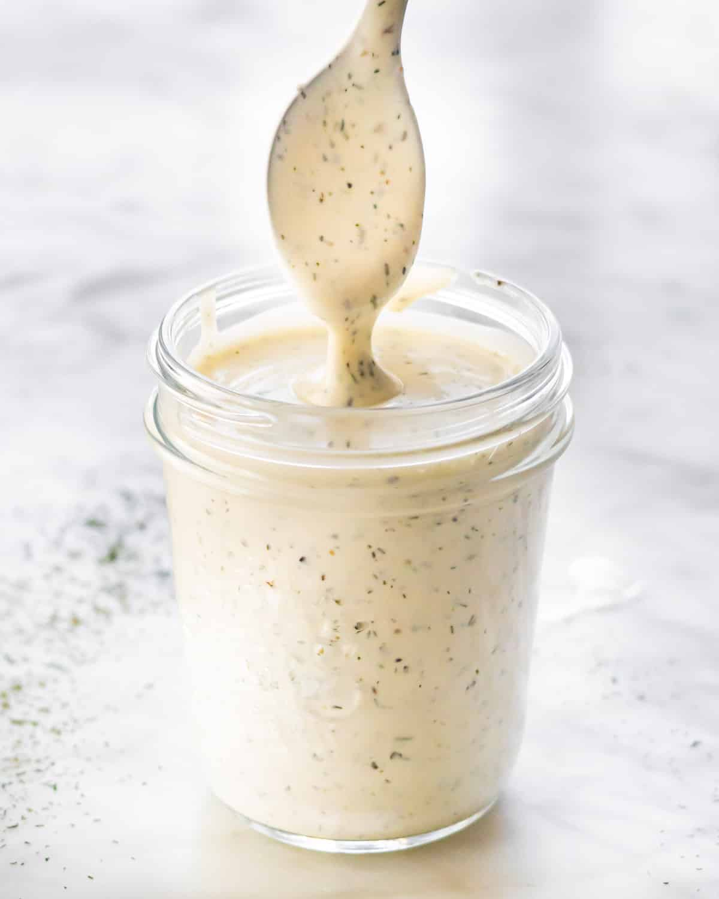

Ranch Dressing

Indulge in the creamy goodness of homemade ranch dressing with our easy-to-follow recipe. Made with a blend of tangy buttermilk, fragrant herbs, and a hint of garlic, this classic dressing is the perfect accompaniment to fresh salads, crispy chicken wings, or crunchy vegetable sticks. Whether you're dressing up a salad or adding a dip to your favorite snacks, our ranch dressing recipe promises a burst of flavor in every bite. Whip up a batch in minutes and elevate any dish with the irresistible taste of homemade ranch.
Ingredients:
- 1 cup mayonnaise
- 1/2 cup sour cream
- 1/2 cup buttermilk
- 1 tablespoon fresh parsley, finely chopped
- 1 tablespoon fresh dill, finely chopped
- 1 teaspoon garlic powder
- 1 teaspoon onion powder
- 1/2 teaspoon dried chives
- 1/2 teaspoon salt
- 1/4 teaspoon black pepper
- In a bowl, whisk together mayonnaise, sour cream, and buttermilk until smooth.
- Stir in parsley, dill, garlic powder, onion powder, chives, salt, pepper, and optional paprika and oregano.
- Adjust seasoning to taste.
- Refrigerate for at least 30 minutes before serving to allow flavors to meld.